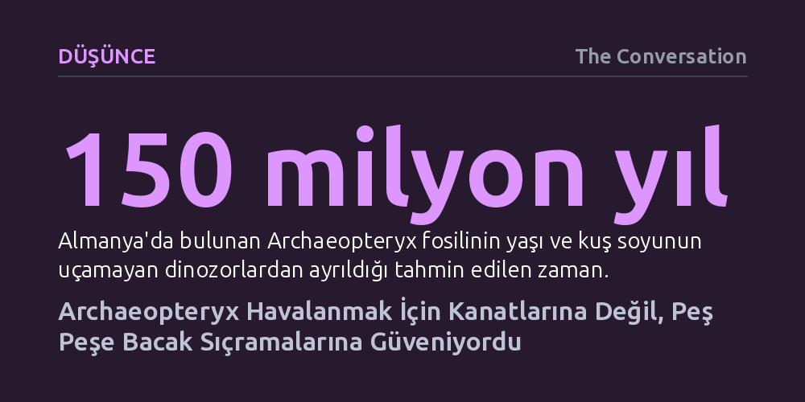

DUSUNCE · The Conversation · 2026-09-07
Yeni bir biyomekanik modelleme, ilk kuş kabul edilen Archaeopteryx'in zayıf göğüs kasları nedeniyle doğrudan kanat çırparak yerden ayrılamayacağını, peş peşe iki veya üç bacak sıçramasıyla havalandığını kanıtladı. Havalandıktan sonraysa kanat çırpışları saniyede 7 metrelik uçuş hızını korumaya yetiyordu.
Kuş uçuşunun başlangıcını kanatların gücüne değil, dinozor atalardan miras kalan güçlü bacakların fırlatma kuvvetine bağlayarak uçuşun evrimi anlayışımızı kökten değiştiriyor.

Archaeopteryx, evrimsel biyolojinin en tanınmış simgelerinden biridir ve sıklıkla 'ilk kuş' olarak anılır. Almanya'daki Jura dönemi kireçtaşlarında bulunan 150 milyon yıllık bu fosil, tüyleri ve kanatlarıyla belirgin kuş özelliklerine sahip olsa da uzun kemikli kuyruğu, dişli çenesi ve pençeli parmaklarıyla tipik bir teropod dinozordur. Charles Darwin'in Türlerin Kökeni'ni yayımlamasından kısa süre sonra gün yüzüne çıkarılan bu canlı, dinozorlar ile kuşlar arasındaki en somut geçiş formlarından biri olarak tarihe geçti. Ancak paleontologların zihnini uzun süredir kurcalayan temel bir paradoks vardı: Bu canlı uçabiliyor muydu, uçabiliyorsa yerden göğe nasıl yükseliyordu?
Günümüz kuşlarının aksine Archaeopteryx ileri derecede gelişmiş bir uçuş anatomisine sahip değildi. Göğsünde modern kuşlardaki gibi güçlü kanat kaslarının bağlandığı karinamsı bir göğüs kemiği yoktu ve kanatlarını yatay eksenin üzerine dahi kaldıramıyordu. Dolayısıyla kanatlarını hızla çırparak doğrudan yerden kalkması biyomekanik olarak imkânsızdı. Bilim dünyasında uçuşun ağaçlardan süzülerek mi yoksa yerde koşarken kanat çırparak mı başladığına dair pek çok hipotez öne sürülse de, bu mekanizmaları fosiller üzerinden deneysel olarak kanıtlamak neredeyse imkânsız görülüyordu.
Araştırma ekibi, cevabı doğrudan yaşayan kuşların kalkış anlarını yüksek kare hızlı kameralarla inceleyerek aramaya karar verdi. Gözlemler şaşırtıcı ama evrensel bir davranışı ortaya çıkardı: Modern kuşlar havalanırken ilk itişi kanatlarıyla değil, bacaklarıyla yapıyordu. Kuşlar gökyüzüne atılmadan hemen önce yere iki ayakla kuvvetli bir sıçrama uyguluyor; kanatlar ise ancak ayaklar yerden tamamen kesildikten sonra devreye giriyordu.
Bu mekanizmayı ölçmek amacıyla modifiye edilmiş bir mutfak tartısından hassas bir kuvvet platformu geliştirildi. Raspberry Pi denetimli yüksek hızlı kameralar ve kemik eklem hareketlerini milimetrik olarak çıkaran bilgisayarlı tomografi (BT) taramalarıyla saksağan, karga ve güvercin gibi türlerin kalkış anındaki kuvvetleri hesaplandı. Deneyler, kalkış için gereken asıl itici kuvvetin kanat çırpışlarından değil, doğrudan arka bacak kaslarından sağlandığını kesinleştirdi.
Kuşların bacak eklemlerindeki kas kuvvetlerini ve hareket dinamiklerini içeren bu biyomekanik model, Archaeopteryx'in iskelet anatomisine uyarlandı. Archaeopteryx, günümüz kuşlarının tehlike anında yaptığı gibi tek bir patlayıcı sıçramayla gökyüzüne fırlayamazdı; zira ne bacakları o denli ani bir güç üretmeye ne de zayıf kanatları havada hemen tutunmaya elverişliydi. Ancak bacak anatomisi, art arda yapılacak kontrollü sıçramalar için fazlasıyla yeterliydi.
Hesaplamalar, canlının hızını giderek artıran üç ileri sıçramayla kendisini yerden havalandırabildiğini gösterdi. Dahası, sıçramalar arasına tek bir zayıf kanat çırpışı eklediğinde ("sıçrama-çırpış-sıçrama" düzeniyle), yalnızca iki hamlede havalanma eşiğine ulaşabiliyordu. Canlı bir kez yerle temasını kestikten sonraysa zayıf kanatları, saniyede 7 metrelik bir seyir hızını sürdürmek için yeterli kaldırma kuvvetini üretebiliyordu.
Bu bulgu, kuş uçuşunun evrimine dair yerleşik algıyı temelden sarsıyor. Kuşların atası olan teropod dinozorlar zaten iki ayak üzerinde yürüyen, olağanüstü güçlü bacak kaslarına sahip avcılardı. Bir avcıdan kaçarken ya da engelleri aşarken yapılan güçlü sıçramalar, tüylü ön kolların sağladığı dengeyle birleştiğinde yaşamsal bir avantaja dönüşmüştü.
Kuşların uçuşu, özel uçuş kaslarının birdenbire ortaya çıkmasıyla başlamadı; dinozor atalardan miras kalan güçlü bacakların fırlatma kuvveti sayesinde mümkün oldu. Kanatlar ise ilk etapta kalkışın motoru değil, havada kalmayı sağlayan ikincil bir destek görevi üstlendi. Archaeopteryx modern kuşların kusursuz göğüs anatomisine sahip olmasa bile, dinozor geçmişinden aldığı bacak gücüyle göklere yükselmeyi başarmıştı.